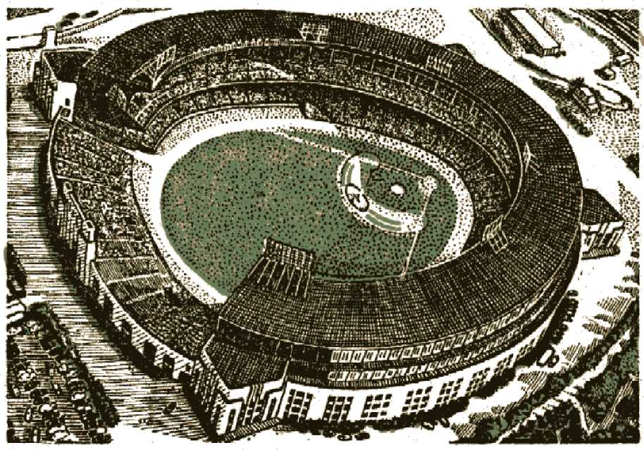

Page 3 "The Prince of Peace"
33 Warning
36 Fearless Against the World Conspiracy
62 Resolution
"THE PRINCE OF PEACE" is the title of the speech which was delivered by the president of the Watch Tower Bible and Tract Society as the public event of the Glad Nations Theocratic Assembly of. Jehovah's witnesses, Sunday, August 11, 1946, to an audience of upward of 80,000 at the Cleveland Stadium.
"FEARLESS AGAINST THE WORLD CONSPIRACY" was the president's keynote speech to the same assembly, to an audience of 55,061 at the Stadium five days preceding the above public address. Because of their world importance and their close relationship to each other, the two speeches are published together in this booklet for circulation to the ends of the earth.
COPYRIGHT, 1946
Watch Tower Bible and Tract Society
PUBLISHERS
Watchtower Bible and Tract Society, Inc. International Bible Students Association, Brooklyn, New York, U. S. A.
Printed in the United States of America
PEACE by the conspiracy of nations and peoples is the openly declared goal of this postwar world. Being warned that now the choice lies between world peace and world destruction, the world's leaders have felt themselves pressed into doing something speedily, unitedly. Particularly "Christendom", so called, has taken the lead in urging the nations to combine in harmonious action in order to make and to keep peace among themselves. Promptly an imposing alliance of nations has been brought forth, and just 147 days after the end of World War II this organization of 51 nations and representing four-fifths of the peoples of earth, began to hold its General Assembly in London, England. The hopes of this world, political, commercial, social and religious, are all bound up with this international conspiracy. The prayers of the religionists, Catholic, Protestant, and Jewish, have been and still are for it; and upon it the rulers and the peoples lay the responsibility of building the foundation of a better world wherein the disturbers of peace will never again bring this world to the brink of annihilation. Now the big question is, Will it fail and bring them disappointment? Dreading such a result, conscientious men of the world who believe in strong action are determined that it shall not fail.
Worldly-wise men envision this international
conspiracy as the best and most advanced way for preserving world peace and security. Faced with all the "atomic age" realities and leaning upon their own wisdom, these men know of no better way. There is a way; there MUST BE a way for lasting peace for all humankind, but is their way the best and only way? If it is not, but is simply man's idea of the best? then it will mean only a brief pause before the world's plunge into the dreaded destruction. How, then, are we to know? And how could we find out anything better to which to turn? The answer is, By the revealed purposes of the God of heaven and earth, who "hath made of one blood all nations of men for to dwell on all the face of the earth, and hath determined the times before appointed". (Acts 17:24-26) To this day His purposes have worked out as predetermined and as foretold, and the record of his purposes in the sacred Bible has proved reliable. As regards his Word in comparison with the word of today's religious and political prophets, we must, therefore, "let God be true." His Word warns all those who seek lasting life, peace and security against such a world conspiracy in these days, because it will fail. But with that failure the cause of perpetual peace will not be lost to all men of good-will. It will be rescued and be made an everlasting reality by the One whom God's Word foretold, "The Prince of Peace." In this One, rather than in a world conspiracy, must the life-seekers of all nations trust.
At a time of international conspiracies, when civilization stood threatened by the great world power, the aggressive empire of Assyria, then it was that the prophecy concerning "The Prince of Peace" was given. It is therefore deeply significant that our time compares with that time. There are important factors in action now that correspond with those in operation in that ancient time. It was for our safe guidance that the record of those ancient circumstances was made and preserved till now. We would be keeping ourselves in the dark and in perplexity with the world's political, commercial and religious leaders, and hence hurting our best interests, if we were to overlook and ignore that Record which God meant for us. (Romans 15:4; 1 Corinthians 10:11) Hence, here we deliberately pause on life's hurried stream and look at the Record. In spirit our eyes turn to the Near East, for there the circumstances surrounding the delivery of the prophecy concerning "The Prince of Peace" arose.
We refer to the eighth century before our common era, or about two thousand seven hundred years ago. Earthly kingdoms were about to pass off the scene then, and among them were the kingdom of Judah and its sisterkingdom, the kingdom of Israel. Back there disturbers of peace were active as they are now, causing national fears. The troublemakers in that ancient time were the kingdom of Syria under King Rezin; and the kingdom of Israel under King Pekah, the son of Remaliah; and the rising world power of Assyria under its king, Tiglath-pileser. To the south lay the waning world power of Egypt, which, however, was still bidding for the world's rule. For smaller kingdoms and governments it was a case of joining a world alliance in a conspiracy with either one of the two world powers as the dominant ruler, or else being destroyed, swallowed up.
In among these international troublemakers lay the small kingdom of Judah. It once boasted of having David the shepherd of Bethlehem-Judah as its king. Now King Ahaz was on the throne of the kingdom of Judah, but he was of the dynasty or house of David by his descent through King Solomon, the wisest man of antiquity. This kingdom of Judah was the sore spot or center of controversy, because it was the only kingdom on earth whose people still professed to worship and serve Jehovah as the only true and living God. Hence all the false gods of the other nations and kingdoms were bent on overthrowing this kingdom of Judah and turning it away from the worship of Jehovah God. The idea was to bring reproach upon the name of Jehovah and to make him look weak and despised in the eyes of all the world. The false gods of the nations were the invisible demons under Satan the Devil. These gods fired the nations with ambitions for expansion. They spurred them on into the conspiracies which had as their object the destruction of the kingdom of Judah, whose professed God was Jehovah and whose king descended from David.
That King Ahaz of the realm of Judah should be a bad king, unfaithful to Jehovah God, is of less importance, because in course of time his successor, his son, King Hezekiah, reformed the nation. The thing of deciding importance is that King Ahaz was of David's house. Therefore he experienced certain mercies and opportunities at the hand of Jehovah God. The word of the Most High God was tied in with what happened to that house of David. Do we ask, Why? It was because a compact or covenant existed between God and David's house. No other royal house or dynasty on the face of this earth has ever enjoyed such a covenant. That covenant of Jehovah God with the house of David was for an everlasting kingdom or Theocratic Government, Because David was a faithful worshiper of Jehovah as God and was anxious to build Him a glorious temple at Jerusalem, God made this Kingdom covenant with David, solemnly saying to him: "I will also subdue all your enemies. Moreover I tell you that the LORD will build for you a house; and when your days are finished, to go with your fathers, then I will establish your heir after you, who shall be one of your sons, and I will establish his kingdom. He shall build me a house, and I will establish his throne forever. 'I will be a father to him, and he shall be a son to me; and I will not withdraw my kindness from him, as I withdrew it from him who was before you. But I will appoint him in my house and my kingdom forever; and his throne shall be established forever.'" (1 Chronicles 17:10-14, An American Translation) No king on earth today, whether anointed by the pope or not, can lay claim to this covenant.
That Kingdom covenant held forth a challenge to all the thrones and kingdoms of this world of which Satan the Devil is prince and god. (2 Corinthians 4:4; John 14:30) Therefore Satan and his demons made it their business to try to destroy the house of David and thus kill all danger from it as the heir of the world's domination. Satan found ready instruments in King Rezin of Syria and in King Pekah, the son of Remaliah, of the kingdom of Israel, and in King Tiglath-pileser of Assyria. Satan the Devil purposed to force King Ahaz of Judah by fear into an improper alliance with King Tiglath-pileser of Assyria. To do this, he caused the two neighboring kings to enter into a conspiracy against the house of David, namely, King Rezin of Syria and King Pekah, the son of Remaliah, of the house of Ephraim. Their fixed purpose was to remove King Ahaz because he was of the house of David with its Kingdom covenant, and to put on the throne, instead, their chosen man as a puppet king. The sacred Bible tells us: "And it was told the house of David, saying, Syria is confederate with Ephraim." — Isaiah 7:1, 2.
King Ahaz was agitated with great fear. He inclined toward an ungodly alliance with Tiglath-pileser of Assyria. Therefore Jehovah God gave King Ahaz some most timely information to turn him away from such a conspiracy with the king of the Assyrian world power. God notified his prophet Isaiah, and sent him to meet King Ahaz of Judah and deliver him this strengthening message: "Because Syria has plotted mischief against you, with Ephraim and the son of Remaliah, saying, 'Let us go up against Judah, and throw it into a panic, and make a schism in it to our interest, and set up the son of Tabeel as king in the midst of it,' thus says the Lord GOD: 'It shall not stand, and it shall not be!'" (Isaiah 7:5-9, An American
Translation) Then God foretold the overthrow of the conspirators.
At that moment came the time for a divine prophecy of world-rocking importance, because it pointed forward to the permanent Heir of the Kingdom covenant of Jehovah with David's house. The prophecy was a guarantee that, both then and now, in the midst of worldly conspiracies affecting the Heir of the Kingdom covenant, God would be with the remnant of his faithful worshipers who refused all worldly alliances and conspiracies due to holding fast their allegiance to God's kingdom covenant and its Heir. We now read the record: "Once more the LORD spoke to Ahaz, saying, 'Ask a sign of the LORD your God; make it deep as Sheol, or high as the heavens!' But Ahaz said, 'I will not put the LORD to the test by asking such a thing.' So he said, 'Hear now, o House of David! Is it too slight a thing for you to weary men, that you must weary my God also? Therefore the Lord himself will give you a sign: Behold, a young woman is with child, and is about to bear a son; and she will call him Emmanuel [God is with us]." — Isaiah 7:10-14, An Amer. Trans.
According to God's prophecy by Isaiah this young woman, or virgin, was to give birth to a son instead of a daughter and was to call him by the name "Immanuel", meaning "God is with us". All this was a certain sign that all the conspirators and their conspiracies against God's kingdom covenant and its permanent Heir would come to nothing. Also, the world conspiracy against God's faithful remnant and their companions who stand first, last and all the time for the Heir of God's kingdom covenant would likewise absolutely fail, because "God is with us!" Who the young woman was that gave birth to the son who was called "Emmanuel" so many centuries ago, the record does not say. Evidently it was the Jewish virgin who became the second wife of the prophet Isaiah himself; for, before this boy named "Emmanuel" grew old enough to distinguish between good and bad, the two kings conspiring against the house of David were to be overthrown and killed. (Isaiah 7:15,16; 2 Kings 15:27-31; 16:5-9) The God-given sign proved to be true back there!
That, back there, was only a miniature fulfillment of the sign and of the overthrow of the worldly conspiracy against God's kingdom covenant. Yet that first fulfillment was a token. It guaranteed that the sign and the overthrow of world conspiracy would be fulfilled in the fullest sense in a like critical time for the remnant of God's faithful worshipers who put all their faith in his Kingdom covenant and its Heir. Today we are face to face with the greatest world-conspiracy of all time, and it is for the domination of this earth in its entirety. Therefore today it is high time to ask, What about the complete fulfillment of the prophecy regarding the sign of the young woman and her son Emmanuel? Do we have it? If we do, then the fate of this world conspiracy is a foregone conclusion. Yes, we do have it. A reliable record of it is preserved and it is backed up by unimpeachable facts. In working out this fulfillment certain things took place, which things show that the producing of the great sign, the birth of Emmanuel, had a close connection with Jehovah's everlasting kingdom covenant with the house of David.
The maiden who produced the child of the sign was a Jewish virgin descended from King David. (Luke 3:23, 32) A maiden of any other family would not be suitable for the sign. At the proper time, says the Record, "the angel Gabriel was sent by God to a town in Galilee called Nazaret, to a maiden who was betrothed to a man called Joseph, belonging to the house of David. The maiden's name was Mary. The angel went in and said to her, 'Hail, o favoured one! . . . Fear not, Mary, you have found favour with God. You are to conceive and bear a son, and you must call his name Jesus. He will be great, he will be called the Son of the Most High, and the Lord God will give him the throne of David his father; he will reign over the house of Jacob for ever, and to his reign there shall be no end.' 'How can this be?' said Mary to the angel, 'I have no husband.' The angel answered her, 'The holy spirit will come upon you, the power of the Most High will overshadow you; hence what is born will be called holy, Son of God.' " — Luke 1: 26-35, Moffatt.
That the birth of this child thus begotten was the complete fulfillment of the predicted sign is verified by the Jewish historian, Matthew, who writes under inspiration as follows: "The birth of Jesus Christ came about thus. His mother Mary was betrothed to Joseph, but before they came together she was discovered to be pregnant by the holy spirit. As Joseph her husband was a just man and unwilling to disgrace her, he resolved to divorce her secretly; but after he had planned this, there appeared an angel of the Lord to him in a dream, saying, 'Joseph, son of David, fear not to take Mary your wife home, for what is begotten in her comes from the holy spirit. She will bear a son, and you are to call him "Jesus," for he will save his people from their sins.' All this happened for the fulfillment of what the Lord had spoken by the prophet: The maiden will conceive and bear a son, and his name is to be called Immanuel (which may be translated, God is with us). So on waking from sleep Joseph did as the angel of the Lord had commanded him; he took his wife home, but he did not live with her as a husband till she bore a son, whom he called Jesus." (Matthew 1:18-25, Moffatt) Thus the historian Matthew connects the sign of Immanuel with the house of David. He shows that although the son born was called "Jesus" he was the sign of Immanuel; he was the child whose birth proved that God was with or in favor of his faithful remnant of people because now the Son of God as his Father's representative was among them. Hence the faithful remnant could say: "If God be for us, who can be against us?" — Romans 8: 31.
That the birth of this son as the sign of Immanuel is related to Jehovah's covenant for the Kingdom with David's house is shown again. This time it is shown by the announcement of heavenly messengers when he was born at Bethlehem-judah, the city where David was born. After telling how Jesus' birth came to be at
Bethlehem, the Bible says: "And there were in the same country shepherds watching, and keeping the night watches over their flock. And behold an angel of the Lord stood by them, and the brightness of God shone round about them; and they feared with a great fear. And the angel said to them: Fear not; for, behold, I bring you good tidings of great joy, that shall be to all the people: for, this day, is born to you a Saviour, who is Christ the Lord, in the city of David. And this shall be a sign unto you. You shall find the infant wrapped in swaddling clothes, and laid in a manger. And suddenly there was with the angel a multitude of the heavenly army, praising God, and saying: Glory to God in the highest; and on earth peace to men of good will." — Luke 2: 8-14, Douay Version.
That angelic announcement of "peace to men of good will" put in evidence two things: (1) The fulfillment of the sign of Immanuel was connected with Jehovah's covenant with David's house for the Kingdom; (2) besides that, it was also the beginning of the fulfillment of Isaiah's prophecy concerning the Prince of Peace; namely, "For unto us a child is born, unto us a son is given: and the government shall be upon his shoulder: and his name shall be called Wonderful, Counsellor, The mighty God, The everlasting Father, The Prince of Peace." — Isaiah 9: 6.
Isaiah's prophecy of the birth of the Prince of Peace was given at the time of international conspiracies in the East, yes, under the shadow of the growing world power of Assyria. It was given at a tense moment in the contest over world domination. Hence the prophecy's fulfillment was to be a sign that the international conspiracies for world domination would be brought to nothing. Today the foremost issue is that of world domination. Today there is a mighty conspiracy for world domination, but the birth of the destined "Prince of Peace" nineteen centuries ago in fulfillment of the prophecy foredooms it to absolute and disgraceful failure.
Does anyone ask the question, Why? Here, then, is the Bible's answer: The world conspiracy of the nations from and after 1945 has nothing in common with the Prince of Peace; it does not even recognize him. None of the united rulers of this world are of the house of David. Nevertheless, the man-made Charter of the world conspiracy assigns to them the task of securing the peace and safety of humankind for all time. On the other hand, Jehovah's covenant for the Kingdom, and also the title "The Prince of Peace", assign to Christ Jesus the task of bringing lasting peace and security to this earth. Let the people, therefore, decide for themselves who can be depended upon as certain to establish unending peace and prosperity. As for us, we choose to "let God be true" when he said in his prophecy concerning Christ Jesus: "His name shall be called Wonderful, Counsellor, Mighty God, Everlasting Father, Prince of Peace. Of the increase of his government and of peace there shall be no end, upon the throne of David, and upon his kingdom, to establish it, and to uphold it with justice and with righteousness from henceforth even for ever. The zeal of Jehovah of hosts will perform this." — Isaiah 9: 6, 7, Am. Stan. Ver.
The present world-conspiracy declares itself set to gain the objectives that God has laid upon his Prince of Peace to gain, and it calls upon the peoples of all nations to support it in establishing universal peace and security by man's efforts and instead of Christ Jesus. It thus proves itself to be a conspiracy against The Prince of Peace and against Jehovah's covenant with Him for the everlasting throne and kingdom. For a reason like that, Jehovah's prophet Isaiah warned King Ahaz and his subjects back there against joining in any worldly conspiracy with the Assyrian world power for peace and self-defense. The warning was written and preserved for us who are at the climax of world conspiracies, in these words: "Make an uproar, o ye peoples, and be broken in pieces; and give ear, all ye of far countries: gird yourselves, and be broken in pieces; gird yourselves, and be broken in pieces. Take counsel together, and it shall be brought to nought; speak the word, and it shall not stand: for God is with us. For Jehovah spake thus to me with a strong hand, and instructed me not to walk in the way of this people, saying, Say ye not, A conspiracy, concerning all whereof this people shall say, A conspiracy; neither fear ye their fear, nor be in dread thereof. Jehovah of hosts, him shall ye sanctify; and let him be your fear, and let
him be your dread." — Isaiah 8: 9-13, Am. Stan. Ver.
King Rezin of Syria and King Pekah of Israel did not fear Jehovah of hosts, but conspired together against His covenant for the Kingdom. Well, their conspiracy was broken to pieces. Likewise King Ahaz of Judah did not fear Jehovah, but entered into conspiracy with the world power of Assyria. Well, this did not really help Ahaz and bring him peace and security. It brought distress and bondage upon him from the Assyrian world power. Worst of all, it put Ahaz out of favor with Jehovah. First after his death and in the days of his son Hezekiah, Jehovah of hosts broke the Assyrian conspiracy against the Kingdom covenant, and the armies of the Assyrian aggressor were forced to retreat from the land of Judah without ever shooting one arrow against the city of Jerusalem. Hence a like defeat of the present-day world conspiracy against Jehovah's covenant and Prince of Peace is a dead certainty, for God is with his Prince Immanuel and with all who give allegiance to him.
Jehovah God states in his Word: "To every thing there is a season, and a time to every purpose under the heaven: a time to love, and a time to hate; a time of war, and a time of peace." (Ecclesiastes 3:1, 8) This is not God's appointed time for peace to this earth. We know that, because his prophetic Word tells us what must be at this period of human history. Peace will not come until HE makes it by his Prince of Peace. He declares: "I form the light, and create darkness; I make peace, and create evil; I am Jehovah, that doeth all these things. " (Isaiah 45:7, Am. Stan. Ver.) Rightly he is called "the God of peace". His long-range purpose for this earth is an unbreakable peace. To this end he raised up his Prince of Peace out of death into which the conspirators put him. God has given him heavenly life immortal. As it is written to those who fear God: "Now the God of peace, that brought again from the dead our Lord Jesus, that great shepherd of the sheep, through the blood of the everlasting covenant, make you perfect in every good work to do his will." (Hebrews 13:20, 21) Hence there must be a reason why the "God of peace" has refused and will further refuse to answer all the religionists of Christendom who pray for the success of the world conspiracy for bringing universal peace and security. It is because he has no covenant of peace with it or with them.
In the prophecy given to those who now make Jehovah God, and not the world conspiracy, their fear and dread it is written: "And I, Jehovah, will be their God, and my servant David prince among them; I, Jehovah, have spoken it. And I will make with them a covenant of peace, and will cause evil beasts to cease out of the land; and they shall dwell securely in the wilderness, and sleep in the woods." (Ezekiel 34:24, 25, Am. Stan. Ver.; 37:26) How, then, could Jehovah answer religious prayers for a worldly peace organization of conspirators against His covenant for the Kingdom with Christ Jesus, the Son of David? GOD is running the universe, and not Satan "the god of this world", nor the political, commercial, religions rulers of this earth. The vindication of God's own word and universal sovereignty will not permit him to bless the world conspiracy with success to the glory of men of this world. To the contrary, the Almighty God of peace will make peace by breaking the world conspiracy to pieces at his appointed time, at Armageddon.
It is vain and absolutely useless, therefore, to send ambassadors to a religious-political ruler who claims to be the vicar of Christ and the vicegerent of The Prince of Peace on earth, and to do so in the hope of benefit to the cause of international good relations and tranquillity. During the past sixteen hundred years the religious-political activities of that reputed vicegerent of The Prince of Peace have never brought a durable peace to earth, not even to Christendom, and never will. It is a false hope. The reason why is that Jehovah God will never permit a mere man on earth to misappropriate to himself the prophetic scriptures and to accomplish on earth what the Most High God has appointed Christ Jesus the real Prince of Peace himself to do without glory to any man. Hence the experience of the ambassadors of the world conspiracy is certain to be as foretold at Isaiah 33: 7: "Behold, their valiant ones shall cry without; the ambassadors of peace shall weep bitterly."
The collapse of the efforts of worldly men to make good their high-sounding hopes and promises to mankind will not mean that the cause of permanent peace is perished. God's own Word was written to forearm us against any such desperate conclusion. Not by man's hands, but by God's almighty power, the foundations of an everlasting universal tranquillity have been laid, and they are not movable by any contrary power in heaven or in earth. Those foundations are laid in his Prince Immanuel and his kingdom. Upon those foundations we may build the brightest hopes for the near future.
In the year 607 B.C., just 138 years after unfaithful King Ahaz died, the human kingdom of the house of David was overthrown and destroyed. Such overthrow brought to an end the reign of the profane, wicked king, Zedekiah. But God's covenant with David's house was not there overthrown and destroyed as a failure. It was merely to continue without a visible kingdom and throne till the coming of the worthy, permanent Heir of the Kingdom covenant. At, his coming God would give the right and power of the Kingdom to him. To this effect God said to King Zedekiah: "And thou, o deadly wounded wicked one, the prince of Israel, whose day is come, in the time of the iniquity of the end, thus saith the Lord Jehovah: Remove the mitre, and take off the crown; this shall be no more the same; exalt that which is low, and abase that which is high. I will overturn, overturn, overturn it: this also shall be no more, until he come whose right it is; and I will give it him." (Ezekiel 21:25-27, Am. Stan. Ver.) This rightful one is Christ Jesus.
At the time of the conception of Jesus as a man, Jehovah's angel told Mary: "He . . . shall be called the Son of the Most High: and the Lord God shall give unto him the throne of his father David." When Jesus had grown to manhood, he refused to let the Jewish people make him king on an earthly throne. The throne promised him in the Kingdom covenant of Jehovah was to be a heavenly throne. (John 6:14,15) Because of his faithfulness on earth even to the death God gave Christ Jesus the right to the Kingdom as the true Heir of the covenant. (Hebrews 1:1-3) However, after he was raised from the dead and ascended up to heaven to God's right hand God did not at once give him the promised scepter to start ruling with power in among his enemies. He must wait for God's appointed time to make the enemies Christ's footstool and destroy them and to usher in the universal peace of a righteous new world. As it is written regarding the resurrected Christ Jesus: "But he, when he had offered one sacrifice for sins for ever, sat down on the right hand of God; henceforth expecting till his enemies be made the footstool of his feet." (Hebrews 10:12,13, Am. Stan. Ver.) That time of expectation ended in the year 1914. At that date the times of the Gentiles' domination which began at Jerusalem's overturning in 607 B.C. came to their finish. What has happened to the Gentile nations since the outbreak of World War I in 1914 proves that point, in full harmony with Jesus' prophecy on the end of this world. (Matthew 24 and 25; Mark 13; and Luke 21) Hence that year he ascended the throne.
Nineteen centuries before that, the prophecy of the sign of Immanuel's birth was fulfilled in the birth of Jesus as a human child, not in the earthly palace of King David, but in a stable in the town of Bethlehem where David was born eleven centuries earlier. But in 1914, at the end of the Gentile times, Christ Jesus at God's right hand in heaven was born in a new capacity, namely, in the capacity of King of kings and Lord of lords. He was born or brought forth as King acting according to God's covenant, to rule in the midst of his enemies for their destruction and thus for the making of a permanent universal peace. There, at his birth or bringing forth to this ruling, peacemaking office, Jehovah's kingdom in the hands of the Heir of his covenant was born. This Theocratic Government was not brought forth from the womb of any earthly virgin. It was born from the womb of God's heavenly organization, for from the midst of this heavenly organization of sons God Jehovah brought forth his King, Christ Jesus. At Revelation, chapter twelve, this birth of God's kingdom in the person of His royal Heir, Christ Jesus, is symbolized as the birth of a man-child from the womb of a glorious woman in heaven. Here Jesus was born to the role of Prince of Peace in a most active sense and at a most fateful time. Concerning this birth in the year 1914 we read, in the symbolic language of Revelation 12: 5: "And she was delivered of a son, a man child, who is to rule all the nations with a rod of iron: and her child was caught up unto God, and unto his throne." — Am. Stan. Ver.
Did that enthronement of the Son of God as the Prince of Peace mean that universal peace would set in immediately? According to the forevision which God's prophetic Word gives, such universal peace was not due and was not to be expected A.D. 1914. The prophecy of Revelation discloses that at the time of the Kingdom's birth in 1914 a demonic conspiracy was launched to destroy the newborn Government and thus prevent its operation. The conspiracy was on the part of Satan's dragon organization. Hence there was no peace in heaven, but, as we read at Revelation 12: 7, 8: "There was war in heaven: Michael and his angels fought against the dragon; and the dragon fought and his angels, and prevailed not; neither was their place found any more in heaven." Hence the heavens were ridded of those demonic peacebreakers by casting them down to the earth, and then the heavenly announcement rang out: "Now is come salvation, and strength, and the kingdom of our God, and the power of his Christ: . . . Therefore rejoice, ye heavens, and ye that dwell in them. Woe to the inhabiters of the earth and of the sea! for the devil is come down unto you, having great wrath, because he knoweth that he hath but a short time." — Revelation 12: 9-12.
Such a cry of woe to earth's and sea's inhabiters because of the debasement of Satan in his great wrath and under his shortness of time could not mean peace for this earth. And there has been no peace, not even after the close of World War I in 1918. There will be no peace until that great dragon, Satan the Devil, and all his demon angels are destroyed. Their destruction the organization of all of earth's nations united together can never and will never accomplish, despite their being equipped with cosmic-ray energy bombs, atomic bombs, or other fiendish instruments of destruction. The Bible plainly says that Satan the Devil is "the prince of this world" and "the god of this world". We may be sure, therefore, that the nations of this world will never seek to destroy the "god of this world". (John 12: 31; 2 Corinthians 4:4) Rather, Satan the Devil, whose great wrath is against the newborn kingdom of God, brings all of the worldly nations into his conspiracy against the kingdom of God, whether those nations realize that fact now or not.
If the religious clergy of Christendom had been faithful to God's kingdom and his Word, the Bible, they would have warned the rulers of the nations against being overreached by Satan and his demons and against being drawn into the satanic worldconspiracy. But what though the clergy have not warned the nations, Jehovah's Holy Word and also His witnesses on earth have been giving the nations due warning, particularly from and after A.D. 1919. For this the nations have persecuted Jehovah's witnesses. But this only adds to the proof that the nations are in the world-conspiracy against the newborn or established kingdom of God by Christ Jesus. That there will be no peace for humanity as long as this world-conspiracy exists, we read, at Daniel 12:1: "And at that time shall Michael stand up, the great prince which standeth for the children of thy people: and there shall be a time of trouble, such as never was since there was a nation even to that same time: and at that time thy people shall be delivered, every one that shall be found written in the book." The newly crowned and enthroned King first turns his attention to war against the enemies of God's kingdom for the vindication of Jehovah's name. God's command to him is: "Rule thou in the midst of thine enemies." (Psalm 110:1,2) Hence, since the Bible uses horses as symbols of warfare, the prophecy pictures the recently crowned King as mounted on a horse, whose white color signifies Theocratic warfare for righteousness. Accordingly we read this description, at Revelation 6:2: "And I saw, and behold a white horse: and he that sat on him had a bow; and a crown was given unto him: and he went forth conquering, and to conquer."
Fulfillment of that prophetic vision began A.D. 1914. Did that mean that the nations of this world would then willingly bow to his rule and that universal peace would set in without a fight? What does the Revelation show would follow the riding forth of the crowned King on his white horse? This is what Revelation 6:4 shows: "And there went out another horse that was red: and power was given to him that sat thereon TO TAKE PEACE FROM THE EARTH, and that they should kill one another: and there was given unto him a great sword." Then, hard on the spark-striking hoofs of this peacekilling horse, gallops another horse bearing Famine. And still another horse with Death, and then Hell (or the grave); and the information is given out: "Power was given unto them over the fourth part of the earth, to kill with sword, and with hunger, and with death [or plague], and with the beasts of the earth." — Revelation 6:5-8.
The nations in the world conspiracy may try to stop the horses bearing war, famine, death and hell (or the grave), but they will never succeed in stopping or even slowing up the white horse with its crowned Rider until he has conquered the very last of his enemies. Till -then, there will be no durable universal peace. Hence as long as the world conspiracy stands in its united opposition to the kingdom of God's covenant with Christ, peace is impossible.
The peoples of the earth have been left without warning by the religious clergy of Christendom. So the peoples are now subject to still further deception by the "god of this world". Jehovah in his faithfulness to mankind's best interests has given advance warning in the Bible that the world conspiracy will try to wear the very garb of Christ by assuming the role of world-wide peacemaker. Like ancient Jerusalem in its last days, so Christendom's would-be builders of a better, finer world created by men's hands will erect a great protective wall against the destruction foretold in God's Word. They will continually daub it with the mortar of political and religious diplomacy and compromise. Christendom's political and religious prophets, particularly her clergy, will propagandize for the nicely daubed wall of defense, arguing the need of it and holding out the last hopes of peace by it. But will this defensive measure of postwar Christendom stand, so that the people should now put their trust in it as sure not to disappoint them?
Hear what God's Word, written aforetime for our admonition, says: "Because, even because they have seduced my people, saying, Peace; and there was no peace; and one built up a wall, and, lo, others daubed it with un-tempered morter: say unto them which daub it with untempered morter, that it shall fall: there shall be an overflowing shower; and ye, o great hailstones, shall fall; and a stormy wind shall rend it. Thus will I accomplish my wrath upon the wall, and upon them that have daubed it with untempered morter, and will say unto you, The wall is no more, neither they that daubed it; to wit, the prophets of Israel which prophesy concerning Jerusalem, and which see visions of peace for her, and there is no peace, saith the Lord GOD [Jehovah]." — Ezekiel 13:10,11,15,16.
Does Christendom think she is more holy than Jerusalem in the days of King Ahaz, who joined in a worldly conspiracy with Assyria? or Jerusalem in the days of her last king, Zedekiah, who joined in worldly conspiracy with Egypt for self-defense? All her religious systems and institutions do not make her more holy and thus more immune from destruction, for Christendom today is the very seat of the visible part of the world conspiracy. Moreover, her religious organizations all support the conspiracy and pin their hopes of survival and of peace to it. Therefore let no one be deceived if the world organization finally brings the nations to a highly developed outward appearance of stability and prosperity and tranquillity. By the signs of the times in fulfillment of prophecy we know what is then impending. To us in particular the apostle Paul writes these words: "But of the times and the seasons, brethren, ye have no need that I write unto you. For yourselves know perfectly that the day of the Lord so cometh as a thief in the night. For when they shall say, Peace and safety; then sudden destruction cometh upon them, as travail upon a woman with child; and they shall not escape. But ye, brethren, are not in darkness, that that day should overtake you as a thief." (1 Thessalonians 5:1-4) So as not to go on in darkness and be overtaken by the sudden destruction coming, we must take heed to the light of Jehovah God's Word.
In the light of that Word, particularly as it shines at Revelation 19:11-21, we see against whom the members of the world conspiracy are gathering. It is against the Rider of the white horse, who is The Prince of Peace, the King of kings and Lord of lords. Also, Revelation 16:13-16, shows under what influences the nations and their rulers are gathering to the showdown fight with the Rider of the white horse at Armageddon. It is under the irresistible urging and guidance of the invisible demonic part of the world conspiracy. There is only one way for men and women as individuals to shake off that influence and avoid being overtaken by that coming sudden destruction, and that is to pay strict attention to God's Word. Only thus will they be hid and come through Armageddon alive. (Zephaniah 2:3) At Armageddon the sudden destruction to the world conspiracy and all its criers of 'Peace and safety' will remove the last barrier to mankind's living on earth without fear of disturbance and harm. It will purge the universe of the great conspirator and disturber, Satan the Devil, "the god of this world." (Revelation 20:1-3) No international human combine could bring about this allessential purging, but the apostle Paul assures all Christians, at Romans 16: 20: "The God of peace shall bruise Satan under your feet shortly." At this bruising of Satan's head by the God of peace and by his Prince of Peace, first then will come "peace on earth to men of good will" and with it "glory to God in the highest".
We are not to suppose that this will be just a spiritual peace in a world of turmoil, such as religion brags she has given to the people of this world. The peace such as religion has given is not what the people want, for it has not satisfied them. That which the Prince of Peace will introduce in the new world will be real and satisfying. His government will be a kingdom of righteousness. God has made him the royal "priest for ever after the order of Melchizedek"; and the name "Melchizedek" means "King of righteousness". The original Melchizedek who was the prototype of the Prince of Peace was king of Salem. Concerning him the apostle Paul makes this explanation: "First being by interpretation King of righteousness, and after that also King of Salem, which is, King of peace." (Hebrews 7:1,2; Psalm 110:4) Christ Jesus, in his capacity as High Priest of God and by means of his redemptive sacrifice for mankind, will bring all his obedient subjects on earth the peace of God that passes all understanding because of the forgiveness and actual taking away of their sins. By his all-power in heaven and in earth he will set up institutions of righteousness upon the earth and will enforce the rule of righteousness among all men everywhere. He will cultivate in their hearts the unselfish love of what is right and just. This will cause peace to come forth in response and to unite with righteousness as its inseparable companion.
Consequently, regarding the merciful reign of Jehovah's King it is foretold: "Surely his salvation is nigh them that fear him; that glory may dwell in our land. Mercy and truth are met together; righteousness and peace have kissed each other. Truth shall spring out of the earth; and righteousness shall look down from heaven. Yea, the LORD [Jehovah] shall give that which , is good; and our land shall yield her increase. Righteousness shall go before him; and shall set us in the way of his steps." (Psalm 85: 9-13) Peace and prosperity will be certain to accompany the enforcement of truth and uprightness in the earth by the King of kings after the destruction of the world conspiracy. Hence it is written: "Behold, a king shall reign in righteousness, and princes shall rule in judgment. Then judgment shall dwell in the wilderness, and righteousness remain in the fruitful field. And the work of righteousness shall be peace; and the effect of righteousness quietness and assurance for ever. And my people shall dwell in a peaceable habitation, and in sure dwellings, and in quiet resting places." (Isaiah 32:1,16-18) Then the "men of good will" that live, beginning with those that survive the battle of Armageddon alive, will hearken to Jehovah's commandments through his reigning King, Christ Jesus. Then their peace will be as a mightily flowing river and their righteous acts will be as the countless waves of the sea, — Isaiah 48:18.
This is not all imagination born of wishful thinking. It is a reality at the door. It is as sure to come as the fact that the child who was to be called "The Prince of Peace" was born in Bethlehem centuries ago. Out of his birth far-reaching results were predicted to come. Many such have already come. Long ago his growing to manhood and his preaching that the kingdom of heaven is at hand brought great light to the peoples walking in darkness and dwelling in the shadow of death. (Isaiah 9:1,2; Matthew 4:12-17) Now, at the year 1914, he came into his kingdom according to God's covenant. He has thus been brought forth or born as the rightful Ruler of a new world of righteousness. The revelation of this fact from the Word of God has brought light to present-day multitudes walking in this world's darkness and sitting under the shadow of the destruction that awaits the world conspiracy. Therefore those who now become the people of Jehovah God are being multiplied and are increasing. They are rejoicing in the establishment of his promised kingdom by his Immanuel. Confidently they look forward with joy to the early destruction of all armaments and all instruments of bloody warfare, to make way for peaceful living under a King who will be a father to his subjects, giving them everlasting life on a paradise earth.
Listen to the prophecy to this effect. It was written in a day of worldly conspiracies for the benefit of us living in this time of the final world conspiracy, and reads: "Thou [O Jehovah God] hast multiplied the nation, thou hast increased their joy: they joy before thee according to the joy in harvest, as men rejoice when they divide the spoil. For the yoke of [their] burden, and the staff of [their] shoulder, the rod of [their] oppressor, thou hast broken as in the day of Midian. For all the armor of the armed man in the tumult, and the garments rolled in blood, shall be for burning, for fuel of fire. [WHY?] For unto us a child is born, unto us a son is given; and the government shall be upon his shoulder: and his name shall be called Wonderful, Counsellor, Mighty God, Everlasting Father, PRINCE OF PEACE. Of the increase of his government AND OF PEACE there shall be no end, upon the throne of David, and upon his kingdom, to establish it, and to . uphold it with justice and with righteousness from henceforth even for ever. The zeal of Jehovah of hosts will perform this." — Isaiah 9: 3-7, Am. Stan. Ver.
Everlasting peace by the Government of The Prince of Peace is a certainty in the near future. Jehovah's zeal and jealous care will never let this fail. He will perform it to vindicate his word and his universal sovereignty. Those today who appreciate the meaning of the human birth of the Prince of Peace nineteen centuries ago will now not be deceived. They will not put their reliance upon a world conspiracy of men for permanent peace, security and prosperity, only to experience bitter disappointment in the end. They will avoid destruction with such world conspiracy by exercising faith in Jehovah God. They will honor him by waiting upon him to carry through his purpose to its glorious finish soon. They will now take their stand for the everlasting Government of His Prince of Peace, and will pray and wait for it to bring in an eternal reign of peace with unfading glory to Jehovah God.
"Say ye not, A conspiracy, concerning all whereof this people shall say, A conspiracy; neither fear ye their fear, nor be in dread thereof."
— Isaiah 8:12, American Standard Version.
JEHOVAH warns all persons seeking lasting life and happiness in a righteous new world against the old-world conspiracy or confederacy. Those who fear him follow his warning. Such ones alone will remain firm and unmoved now when we see the corrupt, unsatisfactory old world taking the course leading to its destruction. All peoples, and particularly their rulers and leaders, are under a crushing tyranny of fear of the future. Under the goadings of fear men are being driven to throw in their fate with the old-world conspiracy. A warning, the warning of Jehovah God, is due to all peoples, because that world conspiracy is against the everlasting good and happiness of all humankind. It is doomed, for God's always-true prophetic Word that correctly foretold the formation of this conspiracy also forewarned of the destruction of it and of all in it.
The conspiracy cannot win against the One against whom it is formed. In its disappointing failure it will draw upon this world and its peoples a disaster from the ruins of which this old world will never recover. Therefore no one can afford to yield to the lash of fear or to be deceived by the worldly-wise attractiveness of the conspiracy, if such one hopes to escape the sure-coming disaster. Unshakable trust in Jehovah God, and with it a confidence in his Word as our Guide, must now be exercised. These are our only strength against becoming drawn into the old-world conspiracy and its destruction in the universal war of Armageddon.
Today we are face to face with a world situation and its influences such as were miniatured for us in the days of the kingdom of Judah under its new king, Ahaz. That was eight centuries ahead of our common era. For our guidance in this most critical time of human history the record of that was preserved by the mighty hand of Him who unerringly foresaw the future. In the light of this record we see clearly the issues at stake today and the only sure way of being on the winning side, where we can survive into the new world of righteousness. The special warning and guiding testimony are given to us in the words of Isaiah, the outstanding prophet in the days when Ahaz ruled over the kingdom of Judah.
The words of Isaiah are of higher value to us now than all the words of the foremost statesmen and religious leaders today. It is because Isaiah was a plain-speaking prophet of Jehovah God and his words were spoken under the power of God's spirit or irresistible force. In his days the "civilized" earth, and especially the kingdom of Judah, was threatened by an ambitious, conscienceless world power seeking for world domination, as well as threatened by international conspiracy. In this day we are threatened by a world system which threatens to swallow up all humankind, and the forces for pushing all men into the international conspiracy against the very kingdom of Jehovah God are increasing in strength and impressiveness. Hence, being under the pressure of world conditions like to but far more consequential than those which caused Isaiah to give the warning and testimony in his day, we do well to consider his words and their historical background. For this reason we invite our readers to carefully consider the article that now follows.
Partial interior view of Cleveland Stadium during the course of the Glad Nations Theocratic Assembly, at which “Fearless Against the World Conspiracy” and “The Prince of Peace” were delivered"
IT IS not a safe rule to go along with the people and to be herded with them en masse into powerful movements of the times. Even in an orderly and well-regulated democracy the majority of the people have again and again been wrong. In the days of the prophet Noah before the global flood the whole mass of humanity was wrong, with but eight exceptions. Those eight, Noah and his little household, were right, due to no human wisdom of their own, but because they went along with God, who is always right. By his prophet Isaiah, Jehovah sends a warning of a different kind of flood to religious Christendom today, in these words: "And Jehovah spake unto me yet again, saying, Forasmuch as this people have refused the waters of Shiloah that go softly, and rejoice in Rezin and Remaliah's son; now therefore, behold, the Lord bringeth up upon them the waters of the River, strong and many, even the king of Assyria and all his glory: and it shall come up over all its channels, and go over all its banks; and it shall sweep onward into Judah; it shall overflow and pass through; it shall reach even to the neck; and the stretching out of its wings shall fill the breadth of thy land, O Immanuel." — Isaiah 8: 5-8, Am. Stan. Ver.
To find out what it is today that compares with the people's rejoicing in Rezin and Remaliah's son and refusing the waters of Shiloah, we have to get the ancient setting of Isaiah's words. The waters of Shiloah flowed in a small stream from a spring, known today as the Virgin's spring, just outside the east wall of Jerusalem. It appears that in the days of Ahaz, king of Jerusalem, there was some means prepared for conducting the waters from this spring to a pool inside the city of Jerusalem. Thus the waters of Shiloah furnished part of the water supply for this capital city of the kingdom of Judah. This small stream seems to be that which is meant at Psalm 46: 4, in these words: "There is a river, the streams whereof shall make glad the city of God, the holy place of the tabernacles of the Most High." Thus the waters of Shiloah were associated with the capital city where Jehovah's anointed king of the house of David- sat upon the throne. At the time Ahaz, although unfaithful to Jehovah God, was permitted to sit upon this throne of the house of David, he being the twelfth of the line of kings descended from King David. This mercy was extended to King Ahaz because of the solemn compact or covenant that Jehovah God made with King David because of David's faith and loyalty.
According to this covenant for the kingdom God said to David: "Thine house and thy kingdom shall be established for ever before thee: thy throne shall be established for ever." (2 Samuel 7:16) Furthermore God said: "My mercy will I keep for him for evermore, and my covenant shall stand fast with him. His seed also will I make to endure for ever, and his throne as the days of heaven. If his children [such as King Ahaz] forsake my law, and walk not in my judgments; if they break my statutes, and keep not my commandments; then will I visit their transgression with the rod, and their iniquity with stripes. Nevertheless my lovingkindness will I not utterly take from him, nor suffer my faithfulness to fail. My covenant will I not break, nor alter the thing that is gone out of my lips." (Psalm 89: 28-34) That covenant with David's house finds its final and complete fulfillment in the great Son of David, the Messiah, namely, the Christ. He becomes the perpetual Heir of this covenant of the everlasting kingdom, regardless of the imperfect, faulty conduct of the kings of David's house who sat upon the throne of ancient Jerusalem. Therefore the '"waters of Shiloah" represent the waters of truth concerning God's covenant governing the Messianic kingdom. Those waters represent the divine promise that Messiah, the great Prince in the kingdom of God, would come through the line of faithful King David and through no other royal line.
The waters of Shiloah, in King Ahaz' day, were accustomed to "go softly", that is, gently, in a small trickle. So, in saying that "this people" refused such waters of Shiloah, God meant that the people were rejecting God's covenant with David's house for the kingdom, because then, in Ahaz' day, it looked so small, weak and lacking in force, and held out little promise of realization. The kingdom of Judah under King Ahaz was a very small and feeble-looking kingdom. It seemed to be easy to be crushed by the hostile powers of this world. Hence, instead of the house of David with its promise of the coming Messiah Prince, "this people" preferred to have a human rule which gave no promise of the Messiah.
Who were "this people" that thus turned their backs against Jehovah's kingdom covenant? It was the natural brethren of the kingdom of Judah, but which brethren to the extent of ten tribes had separated from the twelve tribes of Israel and had set up a kingdom of their own. After the death of King Solomon, the son of David, these ten tribes had broken away to set up their kingdom under a king not of the line of David. Their new kingdom came to be called "the kingdom of Israel" as distinct from "the kingdom of Judah". In the first four years of King Ahaz' rule over the kingdom of Judah the man who was the king over the ten-tribe kingdom of Israel was named "Pekah" and was the son of Remaliah. (2 Kings 15: 25-27) The kingdom of Israel under Pekah might have acted as brethren to the small kingdom of Judah under Ahaz, but did not do so. It showed no respect for Jehovah's kingdom covenant with the house of David. In fact, the kingdom of Israel had officially departed from the worship of Jehovah God and had set up a political religion, a state religion, by the worship of golden calves and later by the worship of the false god Baal and other heathenish gods. — 1 Kings 12: 26-33; 16: 27-33.
Bordering the kingdom of Israel on the northeast lay the kingdom of Syria. These Syrians were distantly related to the twelve tribes of the children of Israel. But they too held no respect for Jehovah's kingdom covenant with the house of David at Jerusalem; they despised it. When King Ahaz began to reign, the ruler of the kingdom of Syria was named "Rezin". Why now did "this people" of Israel rejoice in this Rezin as well as in their own Israelite king, Pekah the son of Remaliah? It was because Rezin showed contempt for the kingdom of Judah with whose king the kingdom covenant of Jehovah was bound. In the days of Jotham, the father of King Ahaz, the kingdom of Israel and the kingdom of- Syria formed an aggressive confederacy against the kingdom of Judah and its king of the house of David. The Bible history says: "In those days the LORD began to send against Judah Rezin the king of Syria, and Pekah the son of Remaliah. And Jotham slept with his fathers, and was buried with his fathers in the city of David his father: and Ahaz his son reigned in his stead." — 2 Kings 15:37, 38.
In the days of King Ahaz the two enemy kings, Rezin of Syria and Pekah the son of Remaliah of Israel, combined their powers still more aggressively. The Bible history tells of the unfaithfulness of King Ahaz to Jehovah God and next says: "Then Rezin king of Syria and Pekah son of Remaliah king of Israel came up to Jerusalem to war: and they besieged Ahaz, but could not overcome him." (2 Kings 16:5) We read of God's displeasure at that time with King Ahaz in these words: "Wherefore the LORD his God delivered him into the hand of the king of Syria; and they smote him, and carried away a great multitude of them captives, and brought them to Damascus [the capital city of Syria]. And he was also delivered into the hand of the king of Israel, who smote him with a great slaughter. For Pekah the son of Remaliah slew in Judah an hundred and twenty thousand in one day, which were all valiant men; because they had forsaken the LORD God of their fathers.... And the children
of Israel carried away captive of their brethren two hundred thousand, women, sons, and daughters, and took also away much spoil from them, and brought the spoil to Samaria [capital city of the kingdom of Israel]." (2 Chronicles 28:5-8) Thus God's kingdom covenant seemed to be in peril.
That was an ancient pattern of things due to take place now. In our days, then, we look for the counterpart. We find it plainly, in Christendom. Let us all keep in mind that Jehovah's covenant for the Kingdom has never been called back or blotted out. It holds good now, this year. The great Son of David, with a view to whom the Kingdom covenant was made with David, has become the everlasting Heir of the covenant. That one is Christ Jesus, a royal descendant of King David according to his human birth. At the time that the angel of God foretold his birth, the angel said to his earthly mother: "Behold, thou shalt conceive in thy womb, and bring forth a son, and shalt call his name JESUS. He shall be great, and shall be called the Son of the Highest: and the Lord God shall give unto him the throne of his father David: and he shall reign over the house of Jacob for ever; and of his kingdom there shall be no end." (Luke 1:30-33) Hence in his manhood Christ Jesus, being anointed with God's spirit, went about among the Jews preaching, "The kingdom of heaven is at hand." Lest this Jesus should prove to be the real heir of Jehovah's covenant, Satan the Devil as the great adversary of God's kingdom had him put to death by the very ones that claimed to be the "children of the kingdom". —Matthew 8:12; 21:43.
When Almighty God raised up Christ Jesus from the dead, then He confirmed to him the mercifully-made Kingdom covenant with David. To prove this, the apostle Paul said to the Jews: "We declare unto you glad tidings, how that the promise which was made unto the fathers, God hath fulfilled the same unto us their children, in that he hath raised up Jesus again; as it is also written in the second psalm [of David], Thou art my Son, this day have I begotten thee. And as concerning that he raised him up from the dead, now no more to return to corruption, he said on this wise, I will give you the sure mercies of David." —Acts 13:22,23,32-34; Isaiah 55:3.
At his ascension to the right hand of his Father in heaven this resurrected Son of David did not at once begin to exercise the power of the Kingdom against all his enemies and for the benefit of his friends and followers. He had to wait until the "times of the Gentiles" ended, before all his enemies would be debased and made his footstool. (Hebrews 10:12,13) Then he would actively enter upon his duties as the Heir and Acting King of the divine covenant for the Kingdom. By all the many events from and after A.D. 1914 in fulfillment of Bible prophecy, and which have repeatedly been published in the *WATCHTOWER* publications, the "times of the Gentiles" ended in 1914, the first year of World War I. At that time the everlasting Heir of the Kingdom covenant was clothed with royal power and authority from God to act. He no longer waits, but since 1914 that Kingdom covenant is being actively carried out in vindication of the name and universal sovereignty of Jehovah God.
Isaiah of old was a faithful witness of Jehovah God. Like him the present-day witnesses of Jehovah are standing lined up back of Jehovah's kingdom covenant with Christ Jesus. They are proclaiming to all the nations that this covenant gives the only title to the rulership over the everlasting new world of righteousness. The 2,520 years of domination of the earth by Gentile kingdoms ended in 1914, and not a single one of earth's human rulers since then has inherited the title to rulership by the Kingdom covenant, but Christ Jesus has the title. Therefore Jehovah's witnesses today declare that it is now high time for all humankind, both political, religious rulers and the common people alike, to recognize Christ Jesus as the rightful Heir and King of the righteous new world. Because their numbers are so few and they are so lowly in the eyes of all Christendom, the proclamation by Jehovah's witnesses of the Kingdom of Jehovah's covenant with his anointed King seems like the trickling, soft-going waters of Shiloah. But, all the same, the truths thus proclaimed quench our spiritual thirst. They revive all those who give allegiance to the heavenly Jerusalem, Zion, which is the capital organization of Jehovah's universal sovereignty.
Jehovah's witnesses by their consecration to God and by following in the steps of His reigning King are the brethren of Christ. All the religionists of Christendom, particularly her clergymen Catholic and Protestant, claim, too, to be related to Christ as his brethren. By their claim they profess to be spiritual Israelites. But does "this people" of Christendom gladly come to the spiritual "waters of Shiloah" and drink of such Kingdom truths and rejoice in the fulfilled Kingdom covenant? Do they act in obedience to God's invitation by His witnesses: "Be glad, ye nations, with his people"? — Romans 15:10, Rotherham.
No; not according to the way they have treated the small number of Jehovah's witnesses and their message since 1914! They have determinedly refused the Kingdom. They have combined in opposition to the educational activities of Jehovah's witnesses among the people and have persecuted these. Acting so, they show beyond all denying by themselves that they "rejoice in Rezin and Remaliah's son". That is to say, they rejoice in the international conspiracy of rulers and governors against Jehovah's kingdom covenant with Christ
Jesus. They rejoice in rulers, governors and leaders who, like Rezin and Pekah, are not in God's kingdom covenant and not worshiping Jehovah as God. Instead, such rulers jointly oppose the covenant's fulfillment and fight against the small number of Jehovah's witnesses who give allegiance to only the Heir of that covenant. The common people join in, either actively or morally, in the religious efforts to silence or nullify the message these witnesses proclaim and to wipe them out or take them captive by concentration camps, prisons, boycotts and laws depriving them of free worship. The record that these opposers and persecutors have made from and after A.D. 1914 stands as a testimony against them and fully convicts them. — See "Be Glad, Ye Nations", pages 32-62.
Such wrongly-based rejoicing of "this people" of Christendom today will not go unpunished by the great Author of the Kingdom covenant. We must either choose and rejoice in the Kingdom or be destroyed. Since such professed people of God do not rejoice in the Kingdom and its message, like the soft-going "waters of Shiloah", therefore God will bring upon them the destructive hosts of Satan's world organization as pictured by the "king of Assyria and all his glory". There are various parts making up Satan's organization. God Almighty will maneuver these so that they will fight against one another to destroy, beginning first with the commercial and political elements against the religious element. Assyria, in the days of Ahaz, Pekah and Rezin, was an expanding empire. It is used in the Bible as a symbol or picture of the Devil's world, Satan the Devil being himself pictured by the mighty king of Assyria. The Assyrian empire then lay along the Euphrates river, that broad, muddy 1,780-mile-long river which yearly overflows its banks. The aggressive, totalitarian-minded, military hosts of Assyria in overrunning the country are therefore well compared with the Euphrates floodwaters, when Isaiah 8:7, 8 says: "Therefore the Lord lets loose on [this people] the strong, full surge of the Euphrates [not running softly like the trickling 'waters of Shiloah', but] overflowing all its channels, brimming over all its banks, swirling onwards, flooding Judah, flooding it up to the neck. But the Lord's wings outstretched shall cover the country from side to side; for 'God is with us'." — Moffatt.
Let not Christendom think she will be able to escape this mighty flood of destruction at the battle of Armageddon. She will no more escape than did the kingdom of Israel and the kingdom of Syria in the days of the Assyrian emperors Shalmaneser and Sargon. The certainty of her being overflowed is strengthened by the fact that Jehovah had the coming destruction predicted repeatedly by the prophet. Also he had the prophet give an advance sign of its coming.
Isaiah tells of it, saying: "And Jehovah said unto me, Take thee a great tablet, and write upon it with the pen of a man, For Maher-shalal-hash-baz [meaning, The spoil speedeth, the prey hasteth]; and I will take unto me faithful witnesses to record, Uriah the priest, and Zechariah the son of Jeberechiah. And I went unto the prophetess; and she conceived, and bare a son. Then said Jehovah unto me, Call his name Maher-shalal-hash-baz. For before the child shall have knowledge to cry, My father, and, My mother, the riches of Damascus [capital of Syria] and the spoil of Samaria [capital of the kingdom of Israel] shall be carried away before the king of
Assyria." (Isaiah 8:1-4, Am. Stan. Ver.) Where Isaiah posted the big board with the fateful words on it we are not told, but there were witnesses to it. The message of divine judgment engraved upon the signboard was served upon two prominent official servants under King Ahaz, namely, the high priest and another man then well known. These could easily notify the king of the short but significant message of judgment directed against the two kingdoms that were assaulting the kingdom of Judah, namely, Syria and Israel.
Not only was the message posted on a large board, but at the birth of Isaiah's second son the message was given to him as his name. If now the divine message failed of fulfillment, then Isaiah's son would be subject to continual reproach for bearing such name, and his father Isaiah would be under continual embarrassment as a false prophet. But Jehovah God did not let that happen.
The name "Maher-shalal-hash-baz" meant "the spoil speedeth, the prey hasteth", that is, against Syria and Israel. The message contained in the name was especially meant to strengthen faith in Jehovah God and in the certainty of his deliverance of his people from these enemies. The Israelites hearing of this message against them might scoff at it as predicting too much too quickly; it would not come in their day. The people of Judah, however, were meant to be stopped by the message against taking hasty action in the wrong direction, toward any compromise with worldly powers. If they would only wait upon the Lord God, the two kings who were attacking their country would be put out of the way. Before Isaiah's newborn son would be able to address him as "My father" or to say "My mother", King
Rezin and King Pekah the son of Remaliah would be disposed of by the king of Assyria. That would mean, ordinarily, within three years' time at most. And so it actually came to pass, for in the fourth year of the rule of King Ahaz both those enemy kings were killed and their countries were spoiled by the mighty Tiglath-pileser, king of Assyria. (2 Kings 15:27-30; 16:9; 1 Chronicles 5:26) Isaiah was vindicated as a true prophet, and his strangely named son became a wonderful sign in all the land. The spoil of Israel and of Syria did speed, and the making of them a prey "to the Assyrian did hasten according to God's own time as foretold by Isaiah.
The removal of King Pekah, however, was not the end of the Assyrian military flood over the land of the kingdom of Israel. About twelve years later the Assyrian hosts of Shalmaneser swept over the land like a destructive river, and at the end of a three-year siege Samaria, the capital city, was destroyed and the Israelites were carried off as captive slaves into the land of Assyria.
About fourteen years later, in 732 B.C., the Assyrian ambitions for more territories and domination led the military flood to sweep southward again. This time it surged into the land of the kingdom of Judah, over which good King Hezekiah now ruled. Matters looked disastrous, as if the king of the house of David would be overthrown, because the Assyrian flood reached, so to speak, "even to the neck." Evidently that meant, up to the capital city, Jerusalem, where the head of the kingdom of Judah sat enthroned. But the kingdom was saved for the house of David, because King Hezekiah and his faithful counselor, the prophet Isaiah, put full trust in the Lord God. Jehovah God spread his wings of power and protection over the land of the kingdom of Judah, and he brushed the Assyrian flood led by mighty king Sennacherib back to whence it had come. In one night the angel of Jehovah God slew 185,000 of Sennacherib's hosts as they were encamped before Libnah, about twenty-five miles southwest of Jerusalem. (2 Kings 19: 35-37) Thereafter there was never again an Assyrian flood-peril in the land of Judah. Hence both King Hezekiah and the prophet Isaiah could triumphantly cry out, "Immanuel!" that is to say, "God is with us!" God had delivered his people!
Today the people of Jehovah hold fast to his covenant for the Kingdom and therefore give their unwavering allegiance to his King reigning on the heavenly Zion. But Isaiah's prophecy warns them that the final flood of the antitypical king of Assyria, Satan the Devil, with all his world forces, will sweep against them in all parts of the earth. The purpose behind this onrush of enemy waters of the postwar world under Satan is to sweep away or overwhelm everyone that does not conform himself to the world's political and religious ideas. It will be just before the universal battle of Armageddon is due to break out. Although the flood appears up to the neck and about ready to submerge the organization of Jehovah's witnesses upon the earth, they must not yield to fear. They will trust in the covert of Jehovah's wings. (Psalm 61:4) They will have confidence in Isaiah's words uttered long ago in the face of like danger: "And the stretching out of his wings shall fill the breadth of thy land, O Immanuel." —Isaiah 8:8.
In proof that Jehovah God would be with them at this supreme crisis of his people on earth, he caused the name "Immanuel" to be given prophetically to his only-begotten Son, Christ Jesus, who is the Heir of the everlasting Kingdom covenant. (Isaiah 7:14; Matthew 1: 23) The Hebrew name "Immanuel" means "God is with us"; that is to say, the God who confers the title to the Kingdom covenant upon his Son Christ Jesus will be with his people in the time of crisis. He will be for them and will protect them by his power exercised through his King whose name "Immanuel" assures us that God is backing us up and will preserve us. All those who are in Immanuel's "land" by rendering him their unqualified allegiance and serving him do not need to fear, therefore, as they draw nearer to the battle of Armageddon and see the oncoming flood of the hosts of the antitypical Assyrian, Satan the Devil. They will have no doubt as to whose side will win, for they will shout, "God is with us." With such faith, they will not be swept off their feet by the overflowing flood of worldliness into becoming opposers of Jehovah and his King. They will stand firm and will see Jehovah's salvation and his decisive victory over all of Satan's world organization and its troops.
The great Assyrian, Satan the Devil, knows what his objectives are in these crucial days upon this world of which he is the prince. (John 14:30) The nations of this world may not realize or appreciate the direction in which they are irresistibly being steered by an unseen, superhuman power; but Satan their god and controller knows whither he and his demons are gathering the nations. Since Jehovah's enthronement of his King of the house of David in the heavens A.D. 1914 Satan has been cast out of the heavens and all his demon hosts with him. (Revelation 12:1-13,17) As for him, the situation now calls for all-out war, by his total world, against Jehovah's King of the new world, who has come to power according to the everlasting covenant for the Kingdom. Therefore Satan organizes all the nations of earth into a resistance bloc not to accept Jehovah's King but to arm themselves for the fray at Armageddon.
Jehovah foresaw this international organized resistance against his Kingdom after its establishment over this earth. Hence he foretold it as due in these postwar times. By his prophet Isaiah he puts these defiant words into the mouths of his witnesses whose eyes he has opened wide to see what the Devil and his earthly nations are up to: "Make an uproar, o ye peoples, and be broken in pieces; and give ear, all ye of far countries: gird yourselves, and be broken in pieces; gird yourselves, and be broken in pieces. Take counsel together, and it shall be brought to nought; speak the word, and it shall not stand: for God is with us." (Isaiah 8:9,10, Am. Stan. Ver.; Rotherham) God desires that the peoples and countries that are afar off from him and his favor should know that he sees what they are attempting to do and that he foredooms it to failure. And so he serves notice upon them by His witnesses, saying (according to another proper translation): "Take knowledge, you peoples afar; give ear, all you distant parts of the earth! Gird yourselves, and be dumbfounded; gird yourselves, and be dumbfounded! Plan a plan — it shall come to nought; speak a word — it shall not stand! For God is with us." (Isaiah 8: 9,10, An Amer. Trans.; Septuagint) Let all who do not want to plan a failure take heed!
Today it is common knowledge that the nations are girding themselves, binding themselves into a world union for strength. In foretelling this, Jehovah God twice mentions them as girding, and with the same result to each girding.
This seems to foretell two efforts at world union by all the nations and countries. Remarkably, we are now living at the time when the second girding has been effected. Even during the dark days of World War I the Allied Nations were talking of a League of Nations, and immediately after the close of that war in 1918 the nations, at their assembly in peace conference, made part of the peace terms the founding of a League of Nations. In 1920 the League of Nations went into operation. By 1935 sixty of the nations joined. But shortly the League of Nations members and statesmen were thrown into consternation and were dumfounded and the League of Nations was broken in pieces, by the machinations of Nazi-Fascist-religious forces, which finally embroiled the world in the total war of 1939-1945. Even the pushers and backers of the old League of Nations admit that it failed and was shattered. Once again, before the global second World War was over, the nations allied against the Nazi-Fascist-religious aggressors discussed the regirding of the nations within a second but stronger league. Before the European conflict ended in June, 1945, fifty nations assembled at San Francisco, California, and drew up the Charter of a new organization known as the United Nations. And before the year was out the Charter was adopted by the needed members and majority of nations, and the organization of the United Nations came into existence and began to get organized and take form. The hopes of this world are pinned to this UN.
What shall Jehovah's witnesses say of this second girding of the worldly nations and its fate? Shall they agree with the enthusiastic proponents of this worldgirding organization? Shall we agree with its first secretary-general, who assures the world that 'the United
Nations will not fail as did the League of Nations after the first World War'? Speaking on June 9, 1946, at the automotive industry's golden jubilee in Detroit, Michigan, he said: "The world is in a serious mess and, what is equally important, the world knows it. We are grimly determined not only to put the world back where it was. We know that the world as it existed was just not good enough. That is one reason why we had the last war. This time we are going far, far ahead of where we were before. We are going to do this with the co-operation of the individual nations, backed by the massed support of the people. We cannot fail, we will not fail." — New York Times, June 10, 1946, pages 1 and 10.
To this, what shall those who trust in God rather than in the regirded nations and peoples say? If Jehovah's witnesses are HIS witnesses, then they will be courageous and fearless enough to reply in His own words to the nations, countries and peoples: "Though you should again become strong; with consternation you shall again be stricken, and what counsel soever you may take, the Lord will defeat it; and what word soever you may speak shall not take effect among you; because God is with us." (Isaiah 8: 9,10, Septuagint, translation by C. Thomson) God is not with the international uniting of this old world. He is with those who are on the side of the royal Inheritor of his Kingdom covenant, the King of Jehovah's new world of righteousness. No strongly girded world-union, no counsel, plan or plot, and no word of men of this world, shall prosper and succeed against Jehovah's now reigning King of His new world. We accept in all good faith the inspired proverb which says: "There is no wisdom nor understanding nor counsel against Jehovah. The [war-] horse is prepared against the day of battle; but victory is of Jehovah." (Proverbs 21:30,31, Am. Stan. Ver.) In the battle of Armageddon, toward which all the worldly nations are marching, the plans, plots, schemes and boastful words, of the old-world organizers will not stand. They will come to nothing, and Jehovah God Most High will gain the victory for the new world which He creates by his kingdom.
The peoples do not realize the ulterior objective of the world organization for peace and security of the nations. True, the United Nations organization has the approval and support and blessing of all the religions of Christendom. Nevertheless, the peoples do not see that the new confederacy of the nations is against the kingdom of Jehovah God which now operates through his King, Christ Jesus, since the close of the Gentile times A.D. 1914. The hidden but real intent of the new international organization was foreshadowed by the purpose of the international combination twenty-six centuries ago in the day of King Ahaz of the royal house of David. In his days the kingdom of Syria made an aggressive alliance with the kingdom of Israel headed by the tribe of Ephraim. What was the aim of this league of nations? It is laid bare to us in the following historical record of Isaiah: "And it came to pass in the days of Ahaz the son of Jotham, the son of Uzziah, king of Judah, that Rezin the king of Syria, and Pekah the son of Remaliah, king of Israel, went up to Jerusalem to war against it; but could not prevail against it. And it was told the house of David, saying, Syria is confederate with Ephraim [or the kingdom of Israel]. And [Ahaz'] heart trembled, and the heart of his people, as the trees of the forest tremble with the wind." (Isaiah 7:1,2, Am. Stan. Ver.) That record exposes the international league as being against the royal house of David.
So as to strip bare the definite purpose of the ancient league, Jehovah God sent Isaiah with this message to King Ahaz, who stood for the house of David and who therefore came under the benefits of God's kingdom covenant: "Because Syria, Ephraim, and the son of Remaliah, have purposed evil against thee, saying, Let us go up against Judah, and vex it, and let us make a breach therein for us, and set up a king in the midst of it, even the son of Tabeel; thus saith the Lord Jehovah, It shall not stand, neither shall it come to pass." (Isaiah 7: 3-7, Am. Stan. Ver.) Who was that unnamed "son of Tabeel" whom the king of Syria and the king of Ephraim (or Israel) proposed to set on the throne of Jerusalem in place of Ahaz? He was certainly not a royal descendant of David's house! Certainly not a man through whom God's covenant for the Kingdom was passed along down until it found its permanent heir in Christ Jesus! The "son of Tabeel" was to be their man, and not God's man or appointee, on the throne of the kingdom of Judah. By this puppet king they were to bring the kingdom of Judah into the league of nations with them. Therefore the devilish purpose of that international conspiracy is uncovered. It is exposed to be to stop the operation of Jehovah's covenant for the Kingdom with the house of David.
Since Jehovah's covenant for the Kingdom is beyond overthrow by any power, human or devilish, that ancient international conspiracy did not stand. Its foul plot did not come to pass. Almighty God brought it to nought. (Isaiah 7: 8, 9) He did this, not for the sake of Ahaz, who was an unfaithful king, but for His own name's sake and for the vindication of His word contained in his Kingdom covenant.
The record discloses that Ahaz' heart trembled at the conspiracy. What now should he do? Should he now fear men and nations of men, and should he copy their methods of conspiracy? For self-defense should he adopt their policy of making a confederation or a league with the nations of this world and thus "meet fire with fire"? Lacking faith in Jehovah, King Ahaz chose the way of this world. He appealed to this world for help. He entered into a conspiracy with the king of Assyria by paying him to come to his aid and deliver him from the international combine of Syria and Ephraim (or Israel). Although this gave King Ahaz temporary relief, it did not work out for permanent good. It led to international entanglements with this world and to new difficulties and distresses. (2 Kings 16: 7-20; 2 Chronicles 28:16-27) God did not bless that compromise with this world, because it was contrary to faith in Jehovah God and contrary to faith in the divine covenant for the Kingdom.
Isaiah, that ancient witness of Jehovah, did not agree with the course of Ahaz in making worldly alliance for peace and security. Neither do Jehovah's witnesses of today agree with that ruler's course or any course like it now. We can no more go along with the mass of the people in their misguided movement in favor of the new international union than we can go along with the people's rulers in Christendom. The Word of God is against joining in the popular trend. The strong hand of the power of God came upon the prophet Isaiah to inspire him and he wrote these words for our admonition in this world crisis: "For Jehovah spake thus to me with a strong hand, and instructed me not to walk in the way of this people, saying, Say ye not, A conspiracy, concerning all whereof this people shall say, A conspiracy; neither fear ye their fear, nor be in dread thereof. Jehovah of hosts, him shall ye sanctify; and let him be your fear, and let him be your dread." — Isaiah 8:11-13, Am. Stan. Ver.
Everywhere we hear the people of Christendom speaking in favor of the postwar conspiracy, this League of Nations creature that has now come up out of the bottomless pit into which it was shoved by World War II. (Revelation 17:8-11) What shall those believers in Jehovah God do who stand in favor of his Kingdom covenant and its permanent Heir now reigning in the heavens? The Nazi-Fascist-religious conspiracy of certain nations during 1933-1945 was directly in opposition to Jehovah's kingdom covenant and his Heir. It was in favor of putting the conspirators' selected ruler upon the throne of world domination in a "new world order". Hence that Nazi-Fascist-religious conspiracy maliciously directed its fire against Jehovah's witnesses and tried to destroy them in concentration camps and other places of torture and by religious persecutions and by governmental oppressions throughout the nations of Christendom. In order that there may be no recurrence of such dastardly efforts of the political-religious conspirators against us, shall we now fear what the people fear, namely, this new all-inclusive conspiracy of nations of the postwar era? Shall we go over to it, as Ahaz went over to the Assyrian world power? and shall we speak in favor of it? It is impossible for us to do so, because this postwar conspiracy of the united nations is for world peace and security by their own political, commercial, social, military and religious institutions. It is a conspiracy against Jehovah's kingdom covenant and its everlasting Heir, Christ Jesus. It seeks to exercise the world domination under the great antitypical Assyrian instead of letting the kingdom of Jehovah by Christ Jesus dominate. The Bible is clear that there is no common ground between this modern Assyrian world power and the kingdom of Jehovah's covenant with his Christ. His witnesses will not fear it and advocate for it, no more than they feared the Nazi-Fascist-religious conspiracy or feared the League of Nations creature that went into the abyss at the outbreak of World War II. This postwar peace-and-security creature of the nations is the same creature risen again from the abyss. Under no compulsion will the faithful Jehovah's witnesses join in with the people in saying, "A conspiracy, concerning all whereof this people shall say, A conspiracy. " They stand forth and declare straightforwardly in favor of Jehovah's Theocratic Government by his Heir of the Kingdom covenant. Jehovah of hosts is their fear, and not men and devils. And Jehovah with his hosts of heaven is the One whom they sanctify in their hearts and minds as the One to dread.
To go along with the peoples and nations in their postwar policy of international unions and alliances would mean to stumble over God's anointed King, Christ Jesus. Both Jewry and all religious organizations of Christendom have stumbled and keep on stumbling over Christ Jesus in his present capacity of Jehovah's reigning King of the new world. And in rejecting Christ Jesus as Jehovah's Heir of the Kingdom covenant they reject Jehovah God himself.
The Lord God foretold this through Isaiah, in these words: "And he shall be for a sanctuary; but for a stone of stumbling and for a rock of offence to both the houses of Israel, for a gin and for a snare to the inhabitants of Jerusalem. And many among them shall stumble, and fall, and be broken, and be snared, and be taken." (Isaiah 8:14,15) This prophecy had its first and small-scale fulfillment at the appearing of Jehovah's Heir nineteen centuries ago, when Christ Jesus appeared as a man, a son of the house of David, and proved worthy of the right to the everlasting Kingdom. (Romans 9:32,33; 1 Corinthians 1:23; 1 Peter 2:4-8) The same prophecy has its final and full-scale fulfillment now when he has actually come into the power of the Kingdom and wields the scepter as the newly-enthroned King and Rightful Ruler of the new world. Hence all those joining in or supporting the postwar conspiracy are being snared and taken to their own destruction at the battle of Armageddon. There the great Stone of stumbling and Rock of offense will fall upon them and break the conspiracy and its backers to pieces. — Daniel 2: 44, 45.
As for Jehovah's witnesses and all who do not stumble and take offense at their message that Christ Jesus is the enthroned King to whom we now owe our allegiance, Jehovah God and his King are for a sanctuary to all such. They will always hallow and worship these Higher Powers of all the universe, and hence will obey them and not the men in the world conspiracy. (Romans 13:1) They turn deaf ears to the political and religious propaganda that pulls peoples into the conspiracy. More, they take careful heed to the testimony and law which the Lord God has provided for the disciples of his anointed King in these days. Concerning this the prophet Isaiah next says: "Bind thou up the testimony, seal the law among my disciples. And I will wait for Jehovah, that hideth his face from the house of Jacob, and I will look for him. Behold, I and the children whom Jehovah hath given me are for signs and for wonders in Israel from Jehovah of hosts, who dwelleth in mount Zion." — Isaiah 8:16-18, Am. Stan. Ver.
Jehovah's testimony by Isaiah concerning all these things and His law of action to govern our course of conduct when these things come true have been faithfully preserved for us. They have been bound up and sealed as the exclusive treasure of His witnesses under Christ, "the faithful and true witness." Christendom does not hold and understand such law and testimony. Hence Jehovah's witnesses are the ones now found to be making known such law and testimony, which He has committed to them for use now. By so doing, they make such law and testimony known to all nations for a witness. All the faithful disciples of Jehovah's King, Christ Jesus, therefore, are for signs and wonders in present-day Christendom, from which God has turned away his face of favor. They will thus be like Isaiah and his sons, Shear-jashub and Maher-shalal-hash-baz, and possibly a third son named "Immanuel". The apostle Paul tells us that, in the prophet's relationship of father to these sons with such meaningful names, Isaiah was a type of Christ Jesus, (Hebrews 2:13) Hence the disciples of Christ must now be "for signs and for wonders in Israel from Jehovah of hosts, who dwelleth in mount Zion". In living up to this obligation they must not fail to be in word and action what they are today known as, namely, witnesses of Jehovah of hosts, who now reigns by his King, Christ Jesus, in the heavenly capital, Zion.
Therefore Jehovah's witnesses must appear prominently before all nations and peoples, with absolute fearlessness against the world conspiracy of this postwar era. By taking a course contrary to the popular current of the nations they will be signs and wonders that will be much spoken against and attacked upon all sides. But by their complete separateness from all worldly conspiracies and by their outspoken devotedness to Jehovah's kingdom by Christ Jesus they will be signs that God's vengeance is speedily coming against all the conspirators and that He will faithfully preserve his restored remnant and their goodwill companions, for "God is with us!" They will not alter their God-given message out of fear or favor. Amid such inescapable prominence because of being so manifestly not of this world and its conspiracy they will not withhold from the people "all the counsel of God". They will unalterably point the people to the law and the testimony which Jehovah has entrusted to their care. There is no light of the new day of righteousness in any other message, and there is no safety in any other rule of conduct amid this world conspiracy. Christendom has proved herself a friend of this world. In His displeasure at her Jehovah God has withheld from her his prophetic message and his doctrine, and no light shines through Christendom's organization. He has given his law and his testimony to his faithful witnesses, his children.
In this dark time when even the religion of Christendom has failed men and has proved disappointing to them, many are inclined to turn in desperation to spiritism and occultism for information concerning the worrisome future. Against falling victim to this popular inclination Jehovah God by his prophet Isaiah gives this final warning for the people of Christendom: "And when they shall say unto you, Seek unto them that have familiar spirits and unto the wizards, that chirp and that mutter: should not a people seek unto their God? on behalf of the living should they seek unto the dead? To the law and to the testimony! if they speak not according to this word, surely there is no morning for them." — Isaiah 8:19, 20, Am. Stan. Ver.
Regardless of the optimistic, rosy promises of the leaders of Christendom, there is no morning of future brightness and prosperity for her. Why not? Because these religious, political and commercial and military leaders of hers speak not according to God's Word. They speak contrary to His law and testimony which apply to this day of decision. They speak according to the traditions of the dead fathers of the past, and also speak according to the "doctrines of demons" in these latter times. (1 Timothy 4:1, Am. Stan. Ver.) And many even consult spirit-mediums and make inquiry of the demons who lyingly pretend to be the shades of the dead humans. It is a perilous time for the people who have depended upon human leaders.
So then, to the fore! all ye witnesses of Jehovah, with complete trust in your God and in his reigning King. Display outright fearlessness of the world conspiracy on the part of both demons and men. Make no compromise with this world in its total alignment against the heavenly kingdom, which kingdom is the one and only hope of all men that seek everlasting life in a righteous new world. By your proclamation everywhere of the message of this kingdom and of its victory over the worldconspiracy at the battle of Armageddon, be all of you for signs and for wonders to the honor and vindication of Jehovah God. Continue to go forth in obedience to the divine command. Bring His message to the people who are perplexed at the confused state of politics, commerce and religion and who are exposed to the misleading propaganda of the demons. In God's Word is no obscurity; and in faithfulness to it point the truth-seeking people to the law and to the testimony which Jehovah God has made plain to you and committed to your care and use.
When the hordes of the antitypical Assyrian finally overspread the earth under the world conspiracy, and when the flood of their totalitarian regimentation seems to reach even up to the neck with the threat of destruction to all those not yielding, be firm and immovable for the everlasting Kingdom of Jehovah's covenant with his anointed "Son of David", Christ Jesus. Keep your integrity unspotted from this world. The final effort of the enemy's world conspiracy at universal domination will fail! The victory will be with those who stand true and faithful for the Theocratic Government of Immanuel, for "God is with us!"
[Presented by the president of the Watch Tower Bible and Tract Society, and unanimously adopted by an assembly of 67,000 at the Cleveland Stadium]
WE, the witnesses of Jehovah, assembled together from many nations in this "Glad Nations Theocratic Assembly" in Cleveland, Ohio, U.S.A., this tenth day of August, 1946, do publicly give thanks to Him for gathering us, and we unitedly make this Resolution before him and his anointed King:
THAT, to the end of this postwar era, we will continue to keep our integrity to Jehovah's kingdom by Christ Jesus as the only rightful Government of this earth and of all the universe, and which Government will endure forever;
THAT we will therefore obey Jehovah's command (Isaiah 8:9,10) to refuse to join in with the people of Christendom in recommending a world conspiracy to quiet the fear and dread of men and recommending that thus a rule of human creatures be put in world control as a substitute for His kingdom by Christ since A.D. 1914;
THAT we will fear Jehovah God and will continue to give the truth to God's recorded Word by preaching in all the habitable earth the glad tidings that his Kingdom was established toward this earth in 1914 and that it is the only Government of universal peace, security and righteousness (Matthew 24:14; Mark 13:10); and
THAT, therefore, we will persist in rejecting the religious traditions which inquire of the dead men in behalf of the living, and we will continue to point the people to the law and testimony and all the Word of God, by means of the work of Bible education "publicly, and from house to house". — Isaiah 8:20; Acts 20:20.